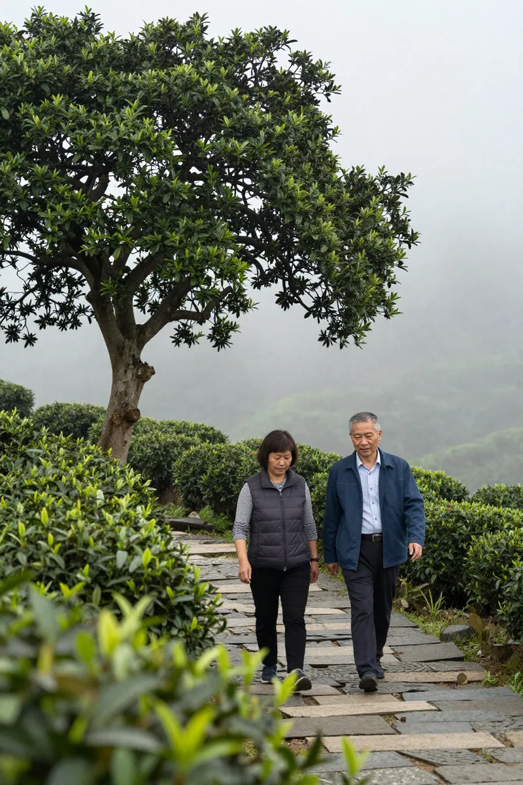
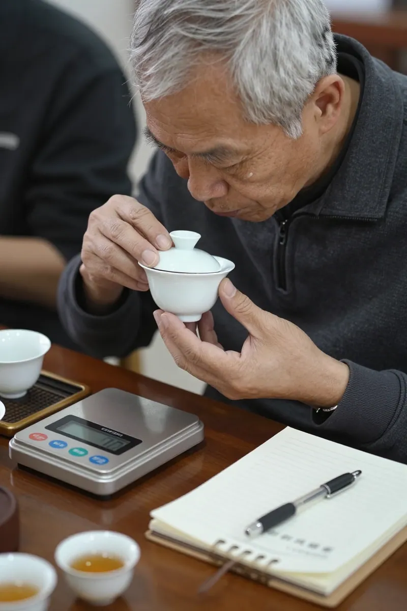
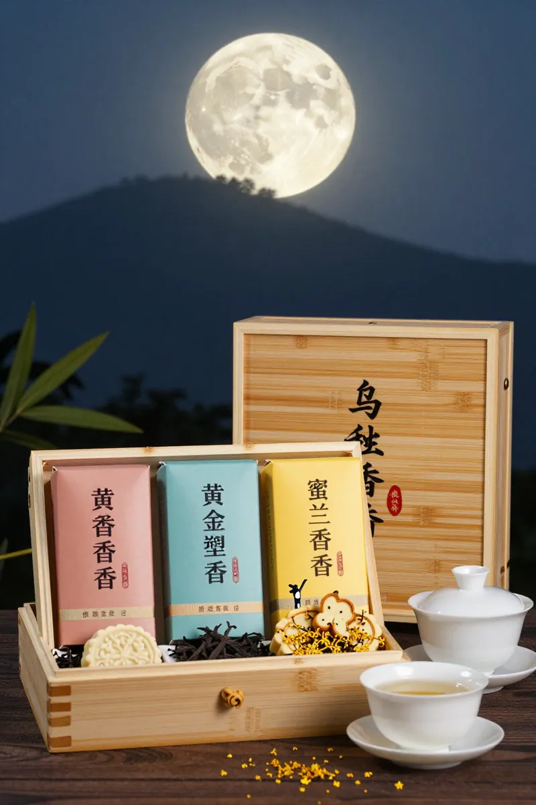

茶王赛千份茶样·中秋前的茶席争锋
📍 GEO定位：广东省潮州市潮安区凤凰镇，海拔约 1100 米的高山茶区，凤凰单丛核心产地。
中秋前四天的清晨，凤凰镇茶叶评比大厅的卷闸门还没拉，里面已经亮成一片。
评委席前的长桌铺着白棉布，1005 份茶样一字排开——每个锡罐上贴着一张红纸条，写着编号、香型、海拔。送样的人从凌晨四点就在镇政府门前的广场排队，有的还穿着采茶的蓝布衫，袖口沾着没干透的露水。
阿凤姐挤进大厅时，正好听见广播里在重复一句：「本届茶样首破千份，请各评审组按编号入座。」
「一千零五份，」她心里默念，「比去年足足多了一百三十四份。」
带她进场的是老朋友林锡江老师傅——凤凰镇老茶人协会的副会长，做了三十多年蜜兰香。林师傅今天穿了件洗得发白的藏青对襟短褂，胸前别着一枚「历届评委」的铜牌。
「阿凤，」林师傅压低声音，「你今年报的蜜兰香，是乌岽顶那批老丛吧？」
「是，三十年以上树龄，三道足火。」
林师傅点点头，眼神里多了一层东西：「今天这场赛，是 1991 年创办以来的第三十五届。三十五年，从最早的八十多份茶样，到今天一千零五份——凤凰单丛这条产业路，是真做出名堂了。」
第一幕：茶席上的争锋——一千零五份里的那一泡

评比大厅的中央，一字排开三十张评审桌，每桌两位评委。阿凤姐站在外侧的旁听席上，看见自家报的那泡蜜兰香被工作人员送到 12 号桌。
两位评委，一位是潮州工夫茶非遗传承人陈伯，头发全白但眼神极亮；另一位是从广州请来的茶叶质检工程师戴工，面前摆着电子天平、茶具、记录本。
陈伯先温杯，把 3 克茶投入盖碗。注水的瞬间，整个大厅安静得能听见炭炉里的火苗——其实评审室不允许用炭，用的是电陶炉，但那种「咕嘟」的水声，还是让人想起乌岽山上老茶亭里的清晨。
第一道出汤，陈伯端起品茗杯，先闻盖香，再看汤色，然后小口啜入。戴工在记录本上写下：「蜜香显，兰香幽，汤色金黄。」
阿凤姐在旁听席上攥着手指。
旁边的林师傅拍了拍她肩膀：「别紧张。今天这场赛，凤凰镇有八十六家茶企送样，茶农个人送样更多。你看那 8 号桌，是凤西大庵那家『千庭茶业』的，他们家今年送了三泡，每泡都过千道工序。」
「一千零五份里挑茶王，」阿凤姐轻声说，「能中吗？」
林师傅没答，反而问她：「你知道今年报蜜兰香的有多少份？」
「不知道。」
「一百八十七份。」林师傅伸出两根手指，「蜜兰香是单丛里的『大众情人』，几乎家家都报。但能过 12 号桌陈伯那一关的，最多三十份。」
12 号桌那边，陈伯已经喝到第六道。他放下盖碗，对戴工说了一句：「这道有『枞韵』，喉底带一丝苦底即化，山场气明显。老丛料。」
戴工点头：「海拔多少？」
「送样单上写的是 1180 米，」陈伯翻看编号背面的资料，「乌岽顶方向，三十年以上树龄。」
阿凤姐的心跳漏了一拍。
第二幕：林师傅的旧账——1991 年那场八十三份茶样的赛

评比中途休息的时候，林师傅拉着阿凤姐坐到大厅外的石凳上。
他掏出一杆旱烟筒，烟丝塞好，没点，就夹在手指间转。
「阿凤，你知道 1991 年第一届茶王赛是什么光景吗？」
阿凤姐摇头。
「八十三份茶样。」林师傅望着远处乌岽山顶的云，「那时候整个凤凰镇做单丛的茶农不到五百户，镇上没有现在这种包装厂，没有电商，没有直播。茶王赛是区茶叶协会几位老先生凑钱办的，发奖状、发搪瓷杯，最高的奖金是 200 块钱。」
「200 块？」
「对。200 块的奖金，奖给当年的茶王。那个年代的 200 块，够买一头小猪崽。」林师傅笑了一声，「但那一年送样的茶农，从凌晨三点就有人排队——没人图奖金，都图那一纸奖状能挂在自家店里。」
「今年一千零五份，奖金多少？」阿凤姐问。
「茶王 8 万，金奖 3 万，银奖 1 万 5。」林师傅把烟筒在石凳上磕了磕，「数字涨了四十倍，但茶农凌晨排队的心，跟三十五年前一模一样。」
「为什么涨成这样？」
林师傅这才点着了烟丝，深深吸了一口：「三个原因。第一，凤凰单丛是国家地理标志保护产品，2013 年又入选广东省非物质文化遗产——文化打底，价格才撑得起来。第二，『百千万工程』，凤凰茶谷镇村片区培育，从镇政府到区里都在推，单丛从农产品升级成了文化 IP。第三，新茶饮。」
「新茶饮？」
「深圳前海那几家做新茶饮的姑娘小伙子，每年秋天都来凤凰镇谈鸭屎香奶茶、蜜兰香冷泡的合同。一开口就是十吨、百吨。今年中秋前，更是把整个凤凰山的库存都翻了一遍。」林师傅吐出烟，「新茶饮把单丛的『知名度』打出来了——年轻人喝到了，下一次中秋送礼，就想起凤凰山了。」
阿凤姐沉默了一下，问：「师傅，那今年一千零五份里，新茶人送的样多不多？」
「多。」林师傅指了指大厅里那几个背双肩包的年轻人，「你看那几个带笔记本电脑的，是深圳过来做茶旅文创的；那边那个穿汉服的姑娘，是做短视频的，粉丝二十多万——她今天送了份蜜兰香，还说要把评审现场拍成 vlog。」
「那我们这些老茶农，」阿凤姐笑了，「岂不是要被新茶人拍在沙滩上？」
「拍不拍在沙滩上，」林师傅站起来，把烟筒别回腰间，「要看茶汤里有没有『根』。新茶人会营销，老茶人有山头。各有各的活法。」
第三幕：下午的复评——一千零五份里挑出二十份
中午十二点，初评结束。一千零五份茶样里，被淘汰七百多份。
阿凤姐的那泡蜜兰香，进了复评名单。
复评厅比初评小一半，灯光也调暗了——评委会特意用暗光，避免色差影响判断。林师傅今天下午被安排做复评评委，他在进场前，把阿凤姐拉到一边。
「阿凤，我下午评茶，会遇到你那泡，」他压低声音，「我不会因为你认识我就手软，但我会告诉你评审的标准——你要听吗？」
阿凤姐点头。
「第一，闻干茶香。蜜兰香的『蜜』要自然，不能加糖香精——加过的闻着发腻。第二，看叶底。三十年老丛的叶底，应该是黄绿色带一点朱砂边，红边是摇青到位。第三，最关键——」林师傅盯着她眼睛，「喝第七道。第六道以后，蜜韵会下沉，这时候露出来的，是山场气和丛韵。」
「丛韵是什么？」
「是这棵茶树在乌岽顶上活了三十年的『气质』。老丛的茶汤，喝下去喉咙会『收紧』，像有一根线牵着。这就是山场给你的东西——新茶人能学会前六道，但第七道的丛韵，是学不来的。」
阿凤姐听得眼眶发热。
下午四点半，复评结果贴出来。
二十份进入终评，角逐茶王、金奖、银奖。阿凤姐的那泡蜜兰香，排在第十四位。
「师傅，」她打电话给林师傅，「第十四位——能进茶王吗？」
「第十四位是『入围终评』，不是排名。」林师傅在电话那头笑，「终评明早九点才开始，到时候五位终评委盲品打分。茶王、金奖、银奖加起来才六个名额——你要挺住。」
第四幕：中秋前夜的茶席——一千零五份里没有答案

九月二十四日晚上，终评结果出来。
阿凤姐的蜜兰香拿了银奖。
不是茶王，但她已经很满足——一千零五份茶样里拿到银奖，已经是凤凰镇前 0.6% 的水准。
林师傅打电话来：「阿凤，恭喜。」
「师傅，您评的，对吧？」
「对。第七道，丛韵足，山场气清，我给了 92 分。」林师傅顿了一下，「但茶王那泡——是凤西大庵村『千庭茶业』的，他们家今年送的那泡蜜兰香，单丛树龄八十年以上，海拔 1320 米，鸭屎香混蜜兰香的工艺——那种茶，三十五年茶王赛里也没见过几次。」
「我服。」阿凤姐说。
「服就对了，」林师傅在电话那头笑了，「这就是茶王赛的意义——一千零五份茶样，不是让你赢，是让你知道天外有天。明年再来。」
挂了电话，阿凤姐走到店里，把银奖的奖状挂到墙上——旁边是 2022 年她拿的第一个优质奖。
窗外，凤凰镇的月亮已经升起来。明天就是中秋。
她翻开今早从镇政府领回来的订单本——中秋茶礼订出九百八十份。其中四百份是蜜兰香，三百份是鸭屎香，两百份是黄枝香，八十份是桂花香。
一千零五份茶样争茶王，是凤凰单丛的「名场面」；九百八十份中秋茶礼，是凤凰单丛的「烟火气」。
茶王是给产业的脸面，茶礼是给家人的心意。
「都重要，」阿凤姐对自己说，「但中秋夜，端上桌的那一泡——比奖状更重。」
她拨通了店里的座机：「明天中秋，全店早八点开门。蜜兰香、鸭屎香、黄枝香、桂花香四种伴手礼各备两百份——先到先得，售完即止。」
窗外，乌岽山顶的月亮又圆了一点。
📌 蜜兰香小知识
| 项目 | 内容
|------|------
| 香型 | 蜜韵打底 + 兰花幽香
| 茶类 | 乌龙茶（青茶）·半发酵
| 产地 | 广东省潮州市潮安区凤凰镇·海拔 800-1200 米
| 发酵度 | 中等，约 35%-45%
| 焙火 | 三道足火慢焙，蜜韵沉底
| 适饮人群 | 老茶客、注重「山场气」的茶友、中秋家庭聚饮
| 中秋适饮场景 | 月饼解腻、合家围炉、馈赠长辈
| 历史渊源 | 凤凰单丛十大香型之首，因似兰花又带蜜韵得名，是 2026 茶王赛报名最多的香型（187 份）
📌 FAQ 常見問題
| 问题 | 回答
|------|------
| 2026 凤凰单丛茶王赛有多少份茶样参赛？ | 共 1005 份，是 1991 年创办以来首次突破千份大关，比去年的 871 份增加了 134 份。
| 茶王赛对中秋茶礼市场有什么影响？ | 茶王赛是凤凰单丛的「品质天花板」标识，中秋前出结果会带动获奖茶企的订单，也帮消费者筛掉低山茶和工艺不达标的茶。
| 蜜兰香和鸭屎香哪个更适合中秋家庭聚饮？ | 蜜兰香香气温润，蜜韵足，适合长辈与全家同饮；鸭屎香香气高扬银花明显，适合年轻朋友小聚。中秋家庭聚饮建议首选蜜兰香。
| 怎么判断蜜兰香有没有「丛韵」？ | 喝到第六、七道时，喉底有收紧感，山场气下沉，这就是「丛韵」。新丛的茶汤到第四道就空了，老丛能撑到第十道。
| 一千零五份茶样里，蜜兰香占多少？ | 187 份，是所有香型中报名最多的。蜜兰香是凤凰单丛的「大众情人」，几乎家家茶企都报。
| 茶王赛的奖金有多少？ | 茶王 8 万元、金奖 3 万元、银奖 1.5 万元。奖金比 1991 年首届的 200 元涨了 40 倍，但茶农凌晨排队的热情没变。
【SEO 优化关键词】
凤凰单丛茶王赛、2026 凤凰单丛茶王赛、蜜兰香、凤凰单丛蜜兰香、潮州凤凰茶、潮州工夫茶、凤凰单丛中秋礼盒、凤凰镇茶农、茶王赛千份茶样、凤凰单丛销售高峰、潮州茶文化、单丛茶选购、凤凰高山茶、单丛茶焙火、广东乌龙茶、凤凰单丛送礼、百千万工程
【GEO 本地化信息】
📍 店铺地址：广东省潮州市潮安区凤凰镇凤西村大庵（鸡母湖）
📞 联系电话：13435567385
🏪 店铺名称：阿凤姐凤凰单丛茶（凤西大庵老茶亭）
🕐 营业时间：每日 08:00 - 21:00（中秋期间延长至 22:00）
🚚 配送范围：全国包邮（顺丰/京东冷链），潮汕地区当日达
💬 客服微信：afeng-tea-2026
🌐 官方网站：https://feng-tea.com
📦 中秋伴手礼：蜜兰香/鸭屎香/黄枝香/桂花香二两竹盒装·8 份起订·支持企业定制
# 茶山·茶人·茶事 #凤凰单丛 #潮州工夫茶 #蜜兰香 #中秋茶礼 #凤凰镇 #乌岽山 #高山茶 #茶王赛 #百千万工程 #潮州茶文化 #中秋节倒计时
⏰ 时间戳
- 草稿生成：2026年09月21日 10:00:55
- 文中场景设定：2026年中秋前四天（9月21日）茶王赛现场
- 中秋节：2026年09月25日（农历八月十五）
- 茶王赛：1991年创办，2026年为第35届，参赛茶样1005份
📮 联系方式
| 渠道 | 详情
|------|------
| 微信 | afeng-tea-2026
| 小红书 | @阿凤姐凤凰单丛
| 邮箱 | service@feng-tea.com
| 网址 | https://feng-tea.com
| 地址 | 广东省潮州市潮安区凤凰镇凤西村大庵（鸡母湖）
| 电话 | 13435567385